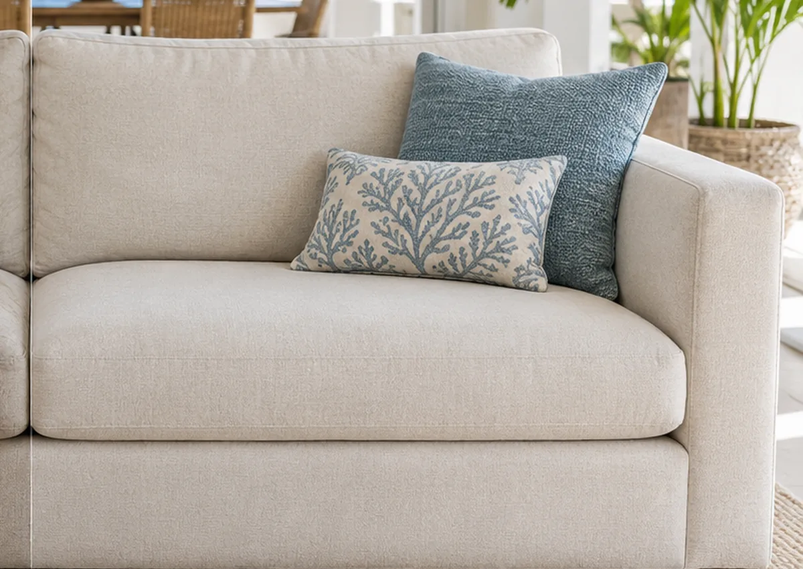

Zones très sollicitées
Assises, dossiers et accoudoirs marquent plus vite avec l’usage quotidien.
Nettoyage canapé · Martinique
MADYCLEAR intervient à domicile pour l’entretien de vos canapés en tissu. Le format, le revêtement, les zones marquées et les photos transmises sont vérifiés avant de confirmer l’intervention.

Votre canapé au quotidien
Le canapé concentre les usages du quotidien : passages répétés, poussière, frottements, petites traces et odeurs. Un entretien adapté permet surtout de préserver son aspect et le confort de la pièce.
Assises, dossiers et accoudoirs marquent plus vite avec l’usage quotidien.
Les zones signalées sont examinées à partir de vos photos avant le rendez-vous.
L’objectif est d’améliorer l’apparence générale sans promettre l’impossible sur chaque tache.
Un textile mieux entretenu participe à une pièce plus nette et plus agréable.
Formats pris en charge
La demande est adaptée au format et au revêtement. Si le textile présente une particularité, elle est vérifiée avant intervention.
Méthode MADYCLEAR
Le déroulement reste lisible du premier contact jusqu’à l’intervention à domicile.
Vous précisez le format, le revêtement, la commune et les zones concernées.
Les images aident à préparer l’estimation et à repérer les points particuliers.
L’intervention est ajustée au support et aux zones retenues lors du diagnostic.
Le temps de séchage dépend du textile, de l’humidité et de l’aération du logement.
Service mobile
MADYCLEAR se déplace à domicile sur l’ensemble de la Martinique selon les disponibilités et l’organisation des tournées. Le lancement terrain reste particulièrement actif dans le Centre-Sud.
Questions fréquentes
Des réponses simples avant de demander votre estimation, sans promesse excessive : chaque textile est vérifié avant intervention.
La durée dépend du format du canapé, de son état et des zones à traiter. Elle est précisée avec l’estimation lorsque les informations sont suffisantes.
Le textile doit être suffisamment sec avant réutilisation. Le délai varie selon le revêtement, l’aération, l’humidité ambiante et les conditions du jour.
Non. Certaines taches anciennes, décolorations ou altérations du textile peuvent rester visibles. MADYCLEAR privilégie une estimation réaliste avant intervention.
Oui, c’est recommandé. Les photos du canapé entier et des zones marquées permettent de préparer une estimation plus précise.
Votre canapé
Indiquez le format du canapé, votre commune et les zones à examiner. Vous pourrez ensuite transmettre les photos par WhatsApp.